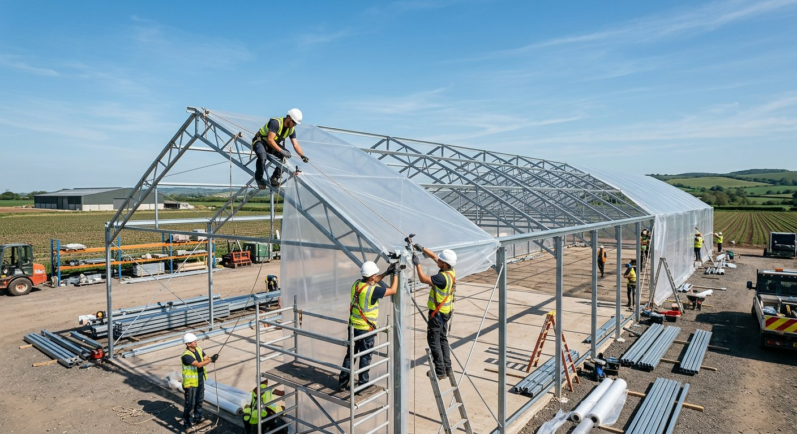

From design to delivery, we build systems that can be operated in the real world.
Our process links field diagnostics, solution architecture, execution controls, and ongoing performance reviews into one implementation rhythm.
A repeatable process designed for clarity and accountability.
Each phase reduces ambiguity for teams, investors, and operators — so everyone knows what happens next.
Discovery
Field conditions, crop goals, and business intent — we start by understanding the ground reality before proposing anything.
Solution Design
Integrated infrastructure and operating-model planning, mapped to your climate, crop, and market.
Execution
Procurement, build coordination, and installation oversight, kept on scope and on schedule.
Commissioning
System testing, calibration, and workflow setup so the farm is ready to operate from day one.
Review
Performance checkpoints and optimization planning that compound results across seasons.

Plans that hold up where it matters — the field.
We coordinate procurement, build, and installation so the system that gets commissioned is the system that was designed.
- On-site build coordination
- Quality and safety oversight
- Commissioning & handover
Purposeful tools, not gadget clutter.
Our technology stack is selected to improve visibility, repeatability, and operating response times — without overwhelming teams.
Sense the field accurately.
Environmental and irrigation sensing that supports better, faster decisions on the ground.
Turn signals into action.
Dashboards, reporting, and routines that translate raw signals into clear operational moves.
Want to see how this maps to your farm?
Walk through your site, crop, and timeline with our delivery team.